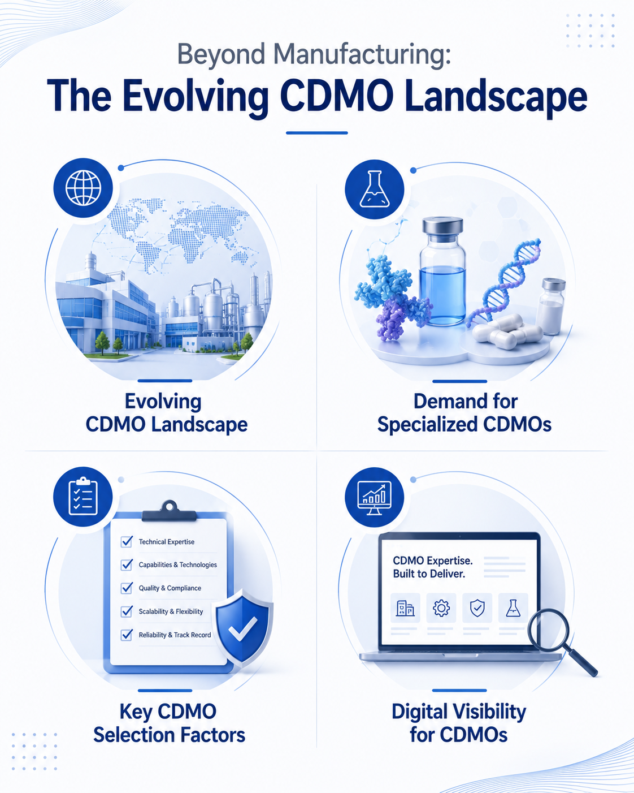

Beyond Manufacturing: How the CDMO Landscape Is Evolving
8 August 2026

The pharmaceutical industry continues to evolve as new therapeutic modalities, increasing regulatory expectations, and growing pressure to accelerate drug development reshape the way companies bring products to market. In this environment, Contract Development and Manufacturing Organizations (CDMOs) have become an integral part of the pharmaceutical value chain, supporting pharmaceutical and biotechnology companies across development, scale-up, manufacturing, and commercialization.
As pipelines become more diverse and product complexity increases, pharmaceutical and biotechnology companies often seek the expertise of CDMOs to complement their internal capabilities. This shift has created new opportunities for CDMOs while also raising expectations around technical expertise, operational flexibility, manufacturing excellence, and quality.
The Changing Nature of Pharmaceutical Outsourcing
Pharmaceutical outsourcing is no longer viewed solely as a way to expand manufacturing capacity. Today, many pharmaceutical companies collaborate with CDMOs to access specialized technologies, accelerate development timelines, and leverage the scientific, regulatory, and manufacturing expertise that experienced CDMOs can provide.
Depending on the project, sponsors may engage a CDMO during early-stage development, clinical manufacturing, commercial production, or throughout the entire product lifecycle. As a result, many CDMOs are expanding their capabilities to provide more integrated contract development and manufacturing services.
What's Driving Demand for Specialized CDMOs?
Several factors continue to influence the pharmaceutical outsourcing landscape and the growing demand for specialized CDMOs.
The growth of biologics, peptides, highly potent APIs (HPAPIs), oligonucleotides, antibody-drug conjugates (ADCs), and other advanced therapies has increased the need for specialized CDMOs with advanced development and manufacturing capabilities. These complex products often require dedicated facilities, advanced analytical expertise, and robust quality systems that many specialized CDMOs continue to develop.
At the same time, increasing demand for sterile manufacturing, containment technologies, continuous manufacturing is encouraging many CDMOs to invest in new technologies and manufacturing infrastructure.
What Companies May Consider When Selecting a CDMO
Manufacturing capacity remains an important consideration, but it is rarely the only factor in CDMO selection. Depending on their project requirements, pharmaceutical companies may evaluate a CDMO based on factors such as:
- Scientific and technical expertise
- Development and manufacturing capabilities
- Experience with specific dosage forms or technologies
- Manufacturing flexibility
- Scalability
- Supply chain reliability
- Regulatory inspections
- Quality management systems
The relative importance of each factor often depends on the stage of development, product complexity, and commercial objectives. Different CDMOs may offer different strengths depending on their expertise, technologies, and manufacturing focus.
Standing Out in a Competitive CDMO Market
The global CDMO landscape continues to expand, with many CDMOs offering similar service portfolios. In such a competitive CDMO market, differentiation often extends beyond manufacturing capabilities alone. Technical expertise, regulatory knowledge, operational excellence, specialized technologies, and a collaborative approach may all contribute to how prospective customers evaluate a CDMO.
Many CDMOs also invest in scientific publications, conference presentations, technical articles, webinars, and educational resources to showcase their expertise, strengthen their reputation, and support knowledge sharing within the pharmaceutical industry.
Digital Visibility Is Becoming Increasingly Important for CDMOs
For many pharmaceutical and biotechnology companies, the search for a CDMO often begins online.
Before initiating discussions with a CDMO, prospects frequently review company websites to better understand technical capabilities, manufacturing infrastructure, therapeutic expertise, quality standards, regulatory experience, and available contract development and manufacturing services.
However, many CDMO websites continue to focus primarily on high-level marketing messages while offering limited technical information. In some cases, this may make it more difficult for potential customers to fully evaluate a CDMO's expertise and capabilities.
A comprehensive CDMO digital presence may include:
- Technology-specific content
- Manufacturing and facility information
- Regulatory and quality credentials
- Technical blogs
- Articles
- FAQs for each service
Well-structured, informative, and search engine optimized content can help CDMOs communicate their technical expertise while making it easier for prospective customers to discover relevant capabilities.
How Pharma Content Solutions Can Help CDMOs
At Pharma Content Solutions, we help CDMOs communicate their expertise through accurate, engaging, and SEO-optimized content tailored for pharmaceutical audiences.
Whether your CDMO needs technical content about contract development and manufacturing services, manufacturing capabilities, technology overviews, technical blogs, thought leadership articles, or website content, we create content that clearly communicates your strengths while supporting your digital visibility and helping prospective customers better understand your CDMO's expertise.
Your CDMO's expertise has the potential to reach the right audience. We help you communicate it effectively.
Looking Ahead
CDMOs that continue investing in technical capabilities, quality systems, digital transformation, manufacturing technologies, and specialized expertise may be well positioned to support the changing needs of pharmaceutical and biotechnology companies.
As the global CDMO market continues to evolve and competition among CDMOs increases, effectively communicating CDMO capabilities may become just as important as developing them.